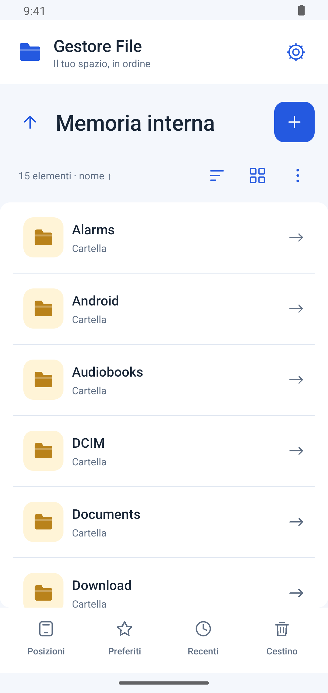

Telefono e USB, insieme
Passa dalla memoria interna alle cartelle autorizzate su una chiavetta USB OTG.
I documenti sul telefono. Le cartelle sulla chiavetta. Tutto a portata di mano, con un gestore file semplice e leggero.
Scarica per AndroidVersione 0.4.0-rc1 · APK · Versione di prova

Comandi vicini ai file. Posizioni, preferiti, recenti e cestino sempre raggiungibili.
Passa dalla memoria interna alle cartelle autorizzate su una chiavetta USB OTG.
Copia, sposta, rinomina più file. Crea cartelle e archivi ZIP, oppure estraili in una nuova cartella.
Gli spostamenti con copia verificano SHA-256 prima di rimuovere gli originali. Il cestino locale permette di recuperare i file eliminati.
Elenco per leggere i dettagli, griglia per scorrere le cartelle. Tema chiaro o scuro e caratteri regolabili dalle impostazioni.
Schermate reali dell’app Android.
Scarica direttamente l’APK. Per le versioni successive basta aprire l’app.
Scarica APKSe Android lo richiede, autorizza l’installazione dall’app con cui stai aprendo l’APK.
Autorizza la memoria interna. Per USB scegli “Posizioni” e poi “Aggiungi USB / cartella”.
All’apertura controlla le nuove versioni: scegli “Aggiorna” o “Più tardi”. L’APK viene verificato, poi Android chiede conferma per installarlo.
I file locali restano sul telefono e sulle memorie collegate. La candidata include Google Drive facoltativo: la configurazione Google è ancora incompleta e il collegamento potrebbe non riuscire. Internet serve anche per gli aggiornamenti da GitHub Pages.
No, se hai la versione originale 0.1.1 o una successiva: la firma è la stessa. Installa l’aggiornamento sopra la precedente per conservare i dati dell’app.
Il manifest pubblico contiene versione, dimensione e SHA-256. L’app controlla anche pacchetto e firma prima di aprire l’installer.
È una versione di prova. Verifica le operazioni con una cartella di test prima dell’uso su dati importanti. La compatibilità con telefono e USB va provata sul dispositivo. Il cestino è disponibile nella memoria interna; su USB l’eliminazione è definitiva e richiede conferma.